ThunderStorm Empire — Википедия
Иерархия «ThunderStorm Empire»
В нашем сообществе ThunderStorm Empire действует Ранговая иерархия. Она представляет собой систему взаимодействия между участниками сообщества.
Из СПЗ: 1.4 — Все участники Империи должны подчиняться СПЗ и Администрации.
Каждый участник сообщества имеет возможность продвигаться по иерархической лестнице и повышать свой ранг. Для повышения на следующую ступень ранговой иерархии требуется проявлять активность и приносить пользу сообществу/серверу.
Система баллового повышения
Система баллового повышения создана для облегчения рассмотрения повышений по иерархии сервера. Данное нововведение помогает правильно и четко рассмотреть деятельность игрока на сервере и решать, может ли игрок продвинуться по иерархии дальше, или же ему стоит ещё постараться.
Данная система направлена на присвоение определенных баллов игроку за выполнение тех или иных работ. За выполнения работ можно получить баллы, которые и влияют на возможность игрока продвинуться по иерархии выше.
Баллы начисляются за:
- Выполнение заданий непосредственно от императора
- Выполнение заданий в рамках своей организации
- Деятельность направленная на помощь/улучшение сервера
- Помощь игрокам в рамках заданий, относящихся/не относящихся к деятельности организации к которой он относиться
В зависимости от сложности задания, вовлеченности игрока в работу/деятельность начисляются баллы от 1 до 5. За месяц можно получить в среднем от 2 до 15 баллов. Баллы начисляются по окончанию работы главой организации/императором/членами комитета/понимающим работу (возможно коллективное решение, по итогам). Баллы могут быть не начислены, если игрок принимал незначительное участие в работе, или было сделано большое количество ошибок.
Баллы суммируются в рамках одного уровня иерархии. По окончанию месяца выноситься решение о повышение/понижение игрока. Если набранных баллов не хватает для повышения, баллы переносятся на следующий месяц и суммируются уже с новыми баллами. После повышения, сбор баллов начинается с нуля.
Если игрок по истечению трёх месяцев не набирает баллы вообще, игрока понижают; исключение — обстоятельства, по которым игрок не мог выполнять задание/находиться на сервере (согласовываться с императором/главой организации, который выдавал задание).
Количество баллов для повышения
| Переход | Требуется баллов |
|---|---|
| Новичок → Послушник | 30 баллов |
| Послушник → Служитель | 90 баллов |
| Служитель → Знаток | 210 баллов |
| Знаток → Элитный | 460 баллов |
Возможно выполнение свободных заданий (общих). Проявление активности отслеживается через наигранные часы на сервере и посещение мероприятий (ивентов), а также отметки в наших соц.сетях (лайки/реакции). Польза сообществу/серверу выражается в выполнии приказов от Императора или лиц, заменяющие его.
Список рангов от высшего к низшему
- Император
- Заместитель
- Главный Администратор
- Технический Администратор
- Администратор
- Модератор
- Хелпер
- Элитный
- Знаток
- Служитель
- Послушник
- Новичок
- Гость
Куда обращаться за повышением и откуда брать задания
- Согласно Указу №2 "О запрете тунеядства" каждый участник Империи обязан состоять на должности в какой-либо гос.организации.
- Из СПЗ: 3.21 — Запрещено не состоять в организации. Исключение: По личному разрешению Императора.
- Согласно Указу №4 «Реформа преобразования Имперских советов» за систему повышений отвечает Министерство Иерархии.
[1] После вступления в Империю вам будет предложен выбор для вступления в гос.организации на сервере. В каждой из таких организаций вам будут выдаваться определённые задания. Задания выдаются главами организациями, по совместительству членами Имперского комитета, или лицами, заменяющие их.
Пример: Император захотел построить статую в честь важного события на сервере. Он поручает эту задачу главам БСЛ и Гильдии строителей. Глава Гильдии строителей поручает заняться этим кому-то из игроков своей организации. Строители составляют список ресурсов, которые нужны для возведения данной постройки. Глава БСЛ получает список и в свою очередь раздаёт задания своим работникам. По итогу, ресурсы были собраны, статуя построена, а Император доволен. Все те, кто принимал участие в выполнении приказа — были повышены.
[2] Для повышения вы можете подать заявление в Имперский комитет через лс сообщества или главу любой гос.организации. Образец заявления:
- Ваш Ник
- Ваш ранг на данный момент
- Почему мы должны повысить вас и что вы для этого сделали?
Ведите список своих выполненных дел. Чем больше подробностей и доказательств, тем больше шансов, что ваше заявление будет одобрено. Все заявления на повышение проверяются и окончательно одобряются Администрацией сообщества. Если вас игнорируют и не повышают, то обратитесь лично к Императору.
Ранг может быть не выдан по усмотрению Администрации. Свой ранг вы сможете посмотреть в виде роли в дискорде Империи, или на сервере. При выходе из Империи — ранг обнуляется. Стоит заметить, что ранг может понижаться, если участник начинает проявлять меньше активности, вредить Империи и участникам сообщества тем или иным образом, а так же по усмотрению администрации.
Подробная информация про ранги
Гость
Выдается при входе в дискорд Империи.
Новичок
Выдаётся после принятия в Империю Администрацией. С этим рангом вы официально становитесь участником ThunderStorm Empire. Появляется возможность состоять в группе, общаться в беседе и играть на сервере — StormLand.
Послушник
Ранг выдаётся после того, как вы:
- Пробудете в Империи 30 дней
- Наиграете на сервере 24 часа
- Наберёте требуемое количество баллов иерархии: 30
Служитель
Ранг выдаётся после того, как вы:
- Пробудете в Империи 6 месяцев
- Наиграете на сервере 7 дней
- Наберёте требуемое количество баллов иерархии: 90
- Принесёте достаточно пользы
Знаток
Ранг выдаётся после того, как вы:
- Пробудете в Империи 12 месяцев
- Наиграете на сервере 14 дней
- Наберёте требуемое количество баллов иерархии: 210
- Принесёте достаточно пользы
Элитный
Ранг выдаётся после того, как вы:
- Пробудете в Империи 24 месяцев
- Наиграете на сервере 30 дней
- Наберёте требуемое количество баллов иерархии: 460
Эту должность получают участники, которые проявили себя как грамотные организаторы: главы бригад, лидеры организаций. Вы хорошо должны знать империю, и какое для него решение будет правильным. Вы должны уметь постоять за свой выбор/мнение и так же уметь отвечать на поставленные администрацией вопросы, так как принятое решение будет влиять на весь сервер целиком.
Император
Монарх и лицо Империи. Руководит Империей и управляет всеми участниками. Обладает неограниченными правами. Определяет основные пути развития для Империи, распределяет руководящие должности и их обязанности. За невыполнение своих обязанностей, а также жалоб со стороны других игроков может снимать с занимаемой должности.
Имперский комитет
Имперский Комитет – это руководящий орган Грозовой Империи, отвечающий за стратегическое планирование и управление ресурсами. Мы подаем идеи развития Империи и обеспечиваем справедливое и прозрачное управление ранговой иерархией.
Обязанности:
- Стратегическое планирование: Разработка и реализация долгосрочных стратегий развития Империи в различных областях.
- Управление ресурсами: Распределение государственных ресурсов (включая алмазы) между министерствами в соответствии с их вкладом и потребностями.
- Управление рангами: Разработка и реализация системы повышения/понижения рангов, основанной на объективных критериях и заслугах игроков.
- Контроль деятельности министерств: Анализ эффективности деятельности министерств и предоставление рекомендаций по их улучшению.
- Собрание министров: Планирование и проведение ежемесячных собраний министров для отчёта о проделанной работе и принятие решений о соответствие размера заработной платы и выполненной работы.
Процедура ежемесячных отчётов и собраний министров
К концу каждого месяца каждый министр должен подготовить подробный отчёт о работе своего министерства в виде Книги с пером (внутриигровой формат). Этот отчёт должен включать:
- Достижения министерства: Подробное описание всех выполненных задач, проектов и достижений за месяц. Краткое изложение значимости этих достижений для Империи.
- Зарплаты сотрудников: Список всех сотрудников министерства с указанием суммы заработной платы, кратким описанием выполненной работы (даже если она не была связана напрямую с министерством) и обоснованием размера зарплаты.
- Финансовые запросы: Обоснованный запрос на выделение средств из государственной казны на нужды министерства и его сотрудников в следующем месяце.
На ежемесячном собрании министров каждый министр представит свой отчёт, после чего состоится открытое обсуждение и голосование о справедливости запрошенной заработной платы. Премьер-министр, учитывая результаты голосования, принимает окончательное решение о выделении алмазов из гос. казны и распределении баллов повышения для сотрудников министерств. 1-го числа следующего месяца подводятся итоги, выплачиваются зарплаты, и проводится церемония повышения в ранге.
Документация обновлена: 15.01.26
Министерства | StormLand
Министерства Грозовой Империи представляют собой ключевые государственные органы, ответственные за разработку и реализацию государственной политики в различных сферах жизни Империи. Каждое министерство обладает уникальным мандатом и набором полномочий, позволяющим ему эффективно управлять своей сферой ответственности. Все министерства работают в тесном сотрудничестве друг с другом, обеспечивая координацию действий и эффективное управление сообществом.
Список министерств:
- Министерство строительства
- Министерство экономики
- Министерство юстиции
- Министерство снабжения
- Министерство просвещения
Министерство строительства
Цель: Реализация проектов в сфере строительства и архитектуры на сервере.
Структура:
Делится на 3 отдела:
- Отдел планирования
- Отдел строительства
- Административный отдел
Обязанности:
Отдел планирования:
- Планировка проектов
- Поиск материалов (скриншоты, лайтматика и т. д.)
- Поиск места для строительства
- Создание разметки
- Составление списка ресурсов
Отдел строительства:
- Выполнение строительных работ в соответствии с планами
- Разделение строителей на разряды в зависимости от умений (бронзовый, железный, золотой, алмазный, незеритовый, рубиновый)
- Организация работы по системе партнерства (ответственный и помощник)
- Накопление опыта и повышение разрядов
Административный отдел:
- Предоставление услуг строительства игрокам
- Распределение заданий строителям и планировщикам
- Выдача разрядов строителям
- Контроль над процессом строительства
Стандарты и ценности:
- Высокое качество строительных работ
- Слаженная командная работа
- Соблюдение сроков и бюджета проектов
- Уважение к сотрудникам и игрокам
Документация обновлена: 15.01.26
Министерство экономики
Цель: Обеспечивание финансовой стабильности сервера через управление государственной казной.
Структура:
Состоит из одного отдела:
- Департамент налогообложения
Обязанности:
Департамент налогообложения:
- Разработка и реализация фискальной и налоговой политики
- Составление и выполнение годовых финансовых планов и бюджетов
Стандарты и ценности:
- Профессионализм и объективность
- Честность и прозрачность
- Эффективность и подотчетность
- Сотрудничество и партнерство
Документация обновлена: 15.01.26
Министерство юстиции
Цель: Надзор и управление системой правосудия Империи, обеспечение соблюдения законов и поддержание правопорядка.
Структура:
Состоит из двух отделов:
- Отдел судопроизводства
- Отдел гвардейских сил
Обязанности:
Отдел судопроизводства:
- Обеспечение соблюдения законов
- Рассмотрение и вынесение решений по юридическим вопросам
- Наказание нарушителей
- Поддержание правопорядка
Отдел гвардейских сил:
- Ответственность за обеспечение безопасности
- Подготовка и повышение квалификации гвардейских сил
- Организация и проведение турниров и мероприятий среди игроков
- Поддержание духа товарищества и сплоченности
- Защита Императора и других важных игроков от врагов
- Патрулирование территорий и обеспечение общественного порядка
- Помощь в выполнении важных миссий
- Выполнение особых задач по приказу Императора, включая гриферство и саботаж вражеских игроков или серверов
Стандарты и ценности:
- Лояльность: Безоговорочная преданность Императору и Империи
- Честь: Поведение с достоинством и честностью во всех ситуациях
- Храбрость: Бесстрашие перед лицом опасности
- Дисциплина: Строгое соблюдение приказов и инструкций
- Профессионализм: Действия на самом высоком профессиональном уровне
Документация обновлена: 15.01.26
Министерство снабжения
Цель: Обеспечение и управление ресурсами, которые необходимы для сервера.
Структура:
Состоит из одного отдела:
- Департамент производства
Обязанности:
Департамент управления ресурсами:
- Определение участков для добычи и сбора ресурсов
- Выполнение добычи, сбора и обработки ресурсов
- Координация с другими министерствами и органами для обеспечения наличия необходимых ресурсов
Стандарты и ценности:
- Эффективность и подотчетность
- Сотрудничество и партнерство
Документация обновлена: 15.01.26
Министерство просвещения
Цель: Обеспечение устойчивого роста, единства и процветания Империи через сохранение и развитие имперской культуры, воспитание лояльных игроков, создание увлекательного игрового опыта и эффективное привлечение новых участников.
Структура:
Состоит из 5 отделов:
- Отдел культуры
- Отдел ивентов
- Отдел развития
- Отдел туризма
- Отдел контента
Обязанности:
Отдел культуры:
- Разработка образовательных программ, проведение церемоний (повышения, бракосочетания)
- Контроль соблюдения идеологических стандартов Империи
Отдел ивентов:
- Сценарная разработка ивентов
- Организация, реализация и прямое проведение ивентов
- Сбор отзывов, анализ результатов, совершенствование будущих событий
Отдел дизайна:
- Создание художественных проектов, мап-артов, плакатов и декораций
- Создание графических и маркетинговых материалов
Отдел туризма:
- Встреча, приветствие и ориентация новых игроков, проведение экскурсий, ответы на вопросы
Отдел контента:
- Создание, курирование и продвижение контента
- Разработка и реализация стратегий по набору новых участников
Документация обновлена: 15.01.26
Спонсорство на сервере Stormland
Для чего нужны спонсоры?
Каждый месяц нам приходится оплачивать хостинг нашего сервера. Мы никогда не будем заставлять игроков платить за игру, никогда не будем добавлять донат, который бы давал преимущества над остальными в игровом процессе. Сервер держится лишь на пожертвованиях участников проекта, благодаря которому он развивается и до сих пор не закрывается. Для того, чтобы больше людей жертвовали своими финансами на благо проекта, мы добавили возможность покупать спонсорку.
Привилегия спонсора действует ровно месяц. Статус спонсора дает некоторые возможности и прикольные плюшки, благодаря которым, вы будете выделяться среди других ;)
Для покупки писать лично Главе Империи.
Глава клана: tellathelegend
Что дают спонсорки
| Спонсор — 200₽ в месяц | Спонсор+ — 300₽ в месяц |
|---|---|
|
|
Документация обновлена: 15.01.26
Системы сервера
Общая информация
StormLand 3 представляет из себя концепцию единого города. Поэтому на основном сервере МВ закрыт ад и энд. Но есть еще один сервер МФ, в нем вы можете строить свои фермы, маленькие базы, но находится в нем бесконечно не сможете. Также существует система связки чата, все сообщения, отправленные в глобальный чат будут также перенаправленны на другой сервер, тем самым вы сможете обмениваться сообщениями на разных серверах. Еще чтобы появилась возможность не исчерпать запас ресурсов в МВ была добавлена синхронизация ваших данных между МВ и МФ (здоровье, эффект зелья, инвентарь, эндер сундук, броня, уровень и голод).
На нашем сервере есть возможность использовать такие моды как: PlasmoVoice и Emotecraft
Все предметы к примеру такие как факела, лампы, грибосветы и т.п. излучают свет если их держать в руке.
На сервере существуют могилы после смерти, если вы не заберете могилу в течение 15 минут, она задеспавнится и все ваши вещи пропадут.
Документация обновлена: 15.01.26
Гайд по Brewery «Алкоголь»
На нашем сервере есть плагин на алковарение, позволяющий вам варить разные напитки. Далее следует инструкция по тому, как делать свои напитки.
Инструкция
Для создания любого напитка необходимо следующее:
- Котел
- Костер
- Зельеварка
- Светопыль
- Бочка
- Источник воды (чем ближе, тем проще)
1. Рабочее место и создание
Рабочее место состоит из котла и костра стоящих друг над другом. Тут начинается создание напитка. В котел заливается вода и закидываются ингредиенты (ПКМ по котлу).
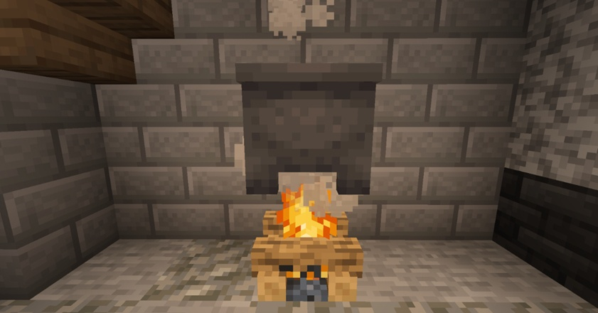
2. Бочки
Существует 3 типа бочек:
- Обычная
- Маленькая бочка (9 слотов)
- Большая бочка (27 слотов)
Чтобы создать бочку надо поставить табличку с надписью barrel, если бочка будет успешно создана, вам это сообщат в чат. Примечание: Только для маленьких и больших.
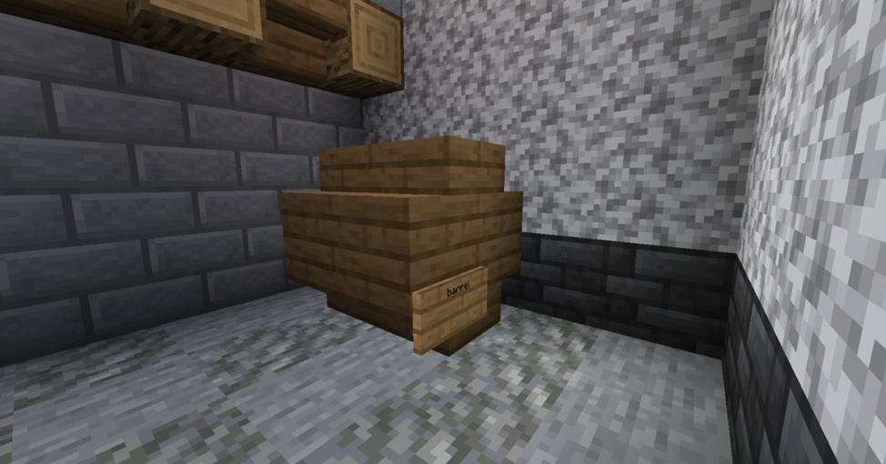
Маленькая бочка состоит из 4 ступенек
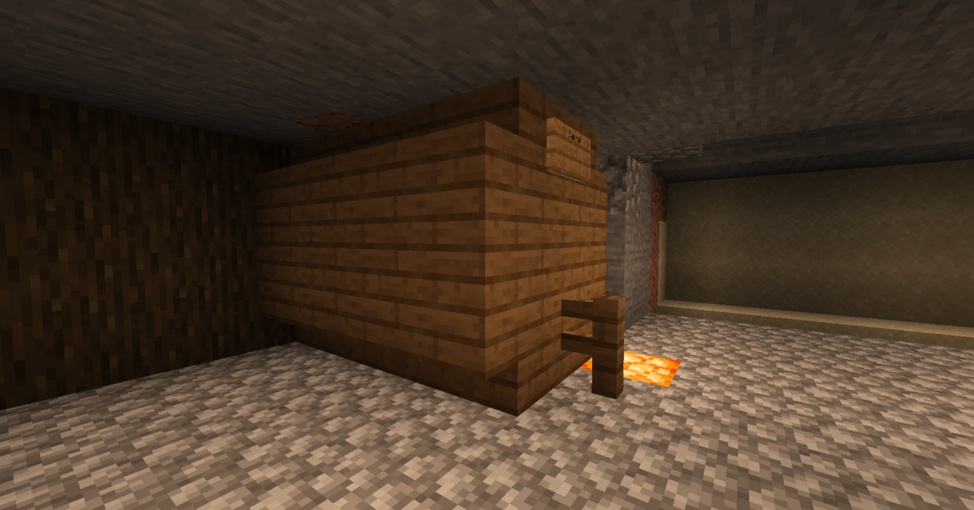
Большая бочка состоит из 16 ступенек, 20 досок и забора
Постройка бочек:
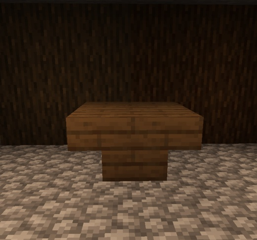
Шаг 1. Устанавливаем перевернутыми ступени (далее п. ступени) квадратом 2х2:
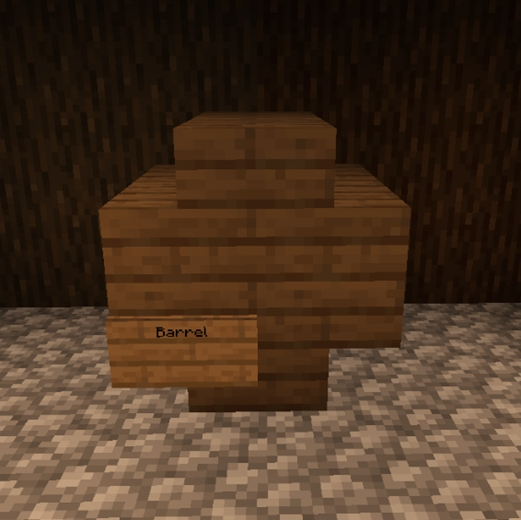
Шаг 2. Завершаем конструкцию ступенями и табличкой Barrel:
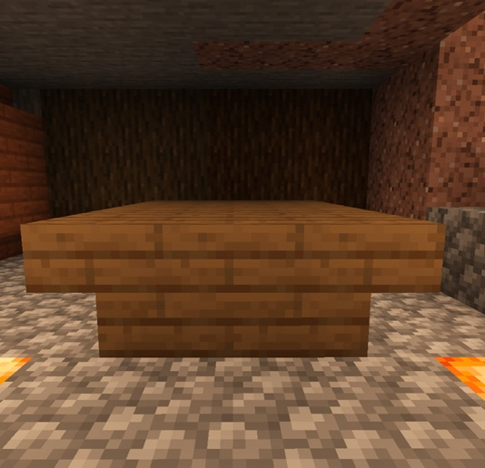
Шаг 1. Устанавливаем сочетание п. ступени‒доски‒п. ступени прямоугольником 4х3:
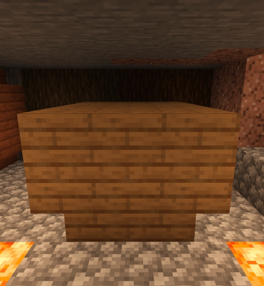
Шаг 2. Вторым слоем устанавливаем доски:
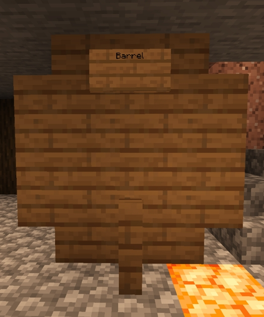
Шаг 3. Последним слоем ставятся ступени‒доски‒ступени, забор в середине первого слоя и табличка с надписью Barrel:
3. Дистилляция
Для многих напитков крайне важный процесс. Осуществляется он в зельеварке со светопылью.
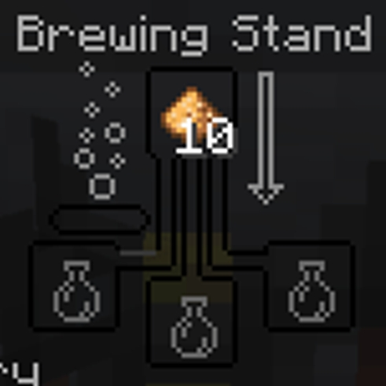
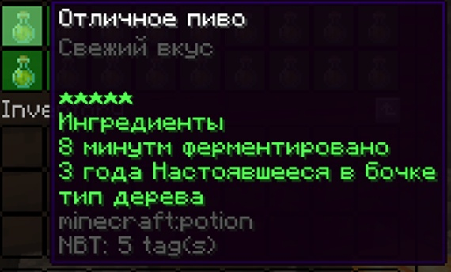
Дополнительная информация
Для разных напитков используется разный тип дерева, из которого изготовлена бочка.
Напитки настаиваются по такому принципу: 1 год в игре = 20 реальным минутам.
Не кладите напитки в бочку, они будут там дальше настаиваться, лучше воспользуйтесь сундуком.
Для дистилляции не обязательно класть порошок, достаточно светопыли.
Хотите узнать сколько варится напиток, возьмите в руку компас и кликните по котлу ПКМ.
Алкогольные напитки
Пшеничное пиво
Пиво
Темное пиво
Вино
Медовуха
Яблочная медовуха
Яблочный сидр
Яблочный ликер
Виски
Ром
Водка
Грибная водка
Гоголь-моголь
Джин
Текила
Абсент
Зеленый абсент
Огненное виски
Золотая водка
Самогон
Фильтрованное пиво
Итальянское вино
Шампанское
Чача
Сакэ
Грибное пиво
Эль
Черный русский
Шишинская настойка
Бурбон
Двойной бурбон
Кумыс
Безалкогольные напитки
Суп из картошки
Ромашковый чай
Японский чай
Квас
Горячий шоколад
Кофе со льдом
Кофе
Свиной суп
Чай из травы
Чай из папоротникa
Чай из морской травы
Чай из мёртвого куста
Чай из хаустонии серой
Рассол
Чай из одуванчика
Чай из мака
Чай из лука
Чай из тюльпанов
Чай из ландыша
Чайный гриб
Чай из визер розы
Чай из спороцветов
Чай из мха
Жидкое мясо
Чай с молоком
Секретные напитки
Ядерный абсент
Энергетик
Песчаная дюна
Богатая жизнь
Темный Эль
Золотой сидр
Балтика
Пьяный лис
Святая медовуха
Святое пиво
Чай с мёдом
Голубая лагуна
Белый русский
Маргарита
Дайкири
Шишинская настойка по старому дедовскому рецепту
Документация обновлена: 15.01.26
Система чая
Обзор
Система чая позволяет игрокам собирать листья с кустов азалии, сушить их и варить различные виды чая с уникальными эффектами.
Предметы
1. Бутылочка
Описание: Пустая бутылочка, используемая в зельеварке для варки чая
2. Зеленые листья
- Описание: Сырье для зеленого чая, требует сушки в бочке над костром
- Особенности: Не стакаются, нельзя использовать в крафтах
- Получение: Сбор с кустов азалии ножницами (40% шанс)
3. Листья черного чая
- Описание: Сырье для черного чая, требует сушки в бочке над костром
- Особенности: Не стакаются, нельзя использовать в крафтах
- Получение: Сбор с кустов азалии ножницами (60% шанс)
4. Сушеные зеленые листья
- Описание: Готовы к использованию в зельеварке
- Качество: Отображается в звездах (★)
- Система качества:
- 20 минут = 1★
- ?* минут = 2★
- ?* минут = 3★
- ?* минут = 4★
- ?*-?* минут = 5★ (максимальное качество)
- Получение: Сушка зеленых листьев в бочке над костром
- Особенности: Не стакаются, нельзя использовать в крафтах
- ⚠️ Важно: Если листья пролежат более ??* минут, они превратятся в сожженные листья
5. Сушеные черные листья
- Описание: Готовы к использованию в зельеварке
- Качество: Отображается в звездах (★)
- Система качества:
- 20 минут = 1★
- ?* минут = 2★
- ?* минут = 3★
- ?* минут = 4★
- ?*-?* минут = 5★ (максимальное качество)
- Получение: Сушка листьев черного чая в бочке над костром
- Особенности: Не стакаются, нельзя использовать в крафтах
- ⚠️ Важно: Если листья пролежат более ?* минут, они превратятся в сожженные листья
6. Сожженные листья
- Описание: Испорченный продукт
- Получение: Сушка листьев более 95 минут
- Особенности: Не стакаются, нельзя использовать в крафтах
7. Бутылочка зеленого чая
- Описание: Восстанавливающий напиток
- Использование: ПКМ - выпить (анимация питья 3 секунды)
- Особенности: Не стакается, чаи разного качества не стакаются между собой
- Эффекты:
- Регенерация:
- 5★ = ? секунд
- 4★ = ? секунды
- 3★ = ? секунды
- 2★ = ? секунды
- 1★ = 1 секунда
- Восстановление здоровья:
- 5★ = ?.? ❤
- 4★ = ?.? ❤
- 3★ = ?.? ❤
- 2★ = 1.0 ❤
- 1★ = 0 ❤
- Регенерация:
8. Бутылочка черного чая
- Описание: Энергетический напиток
- Использование: ПКМ - выпить (анимация питья 3 секунды)
- Особенности: Не стакается, чаи разного качества не стакаются между собой
- Эффекты:
- Скорость:
- 5★ = ?? секунд
- 4★ = ?.? секунд
- 3★ = 7 секунд
- 2★ = ?.? секунд
- 1★ = ? секунды
- Восстановление здоровья:
- 5★ = 1.5 ❤
- 4★ = ?.? ❤
- 3★ = ?.? ❤
- 2★ = 0.5 ❤
- 1★ = 0 ❤
- Скорость:
Процесс создания чая
Шаг 1: Сбор листьев
- Инструмент: Ножницы
- Источник: Кусты азалии
- Действие: ПКМ по кусту ножницами
- Результат:
- 60% шанс получить Листья черного чая
- 40% шанс получить Зеленые листья
Механика кустов азалии:
- Прочность куста: 5 использований
- Восстановление: 1 прочность каждые 10 минут
- Удаление: После 5 использований куст исчезает навсегда
Пример:
- 1/5 использований → восстановление через 10 минут
- 2/5 использований → восстановление через 20 минут
- 3/5 использований → восстановление через 30 минут
- 4/5 использований → восстановление через 40 минут
- 5/5 использований → куст удаляется
Шаг 2: Сушка листьев
Требования:
- Бочка
- Костер под бочкой
- Листья в бочке
Процесс:
- Положите зеленые или черные листья в бочку
- Убедитесь, что под бочкой горит костер
- Листья начнут сушиться автоматически
Качество сушки:
- 20 минут → 1★ (минимальное качество)
- ?* минут → 2★
- ?* минут → 3★
- ?* минут → 4★
- ?*-?* минут → 5★ (максимальное качество)
Результат:
- Зеленые листья → Сушеные зеленые листья
- Листья черного чая → Сушеные черные листья
⚠️ Внимание:
- Если листья пролежат более ?* минут, они превратятся в сожженные листья (непригодны для использования)
- Оптимальное время сушки: ?*-?* минут для максимального качества (5★)
- Используйте метофор для проверки времени сушки листьев в бочке
Шаг 3: Варка чая
Этап 1: Кипячение воды (30 секунд)
- Положите Бутылочку в слоты зельеварки (0, 1, 2)
- Положите Ведро воды в слот ингредиента (3)
- Подождите 30 секунд
- Вода закипит, ведро станет пустым
Этап 2: Добавление листьев
- После кипячения воды положите Сушеные листья в слот ингредиента (3)
- Тип чая зависит от типа листьев:
- Сушеные зеленые листья → Зеленый чай
- Сушеные черные листья → Черный чай
- Качество чая соответствует качеству листьев
- Результат: Бутылочки в зельеварке превратятся в чай соответствующего типа и качества
Использование чая
Зеленый чай
- Эффекты:
- Регенерация (длительность зависит от качества)
- Восстановление здоровья (количество зависит от качества)
- Применение: ПКМ с бутылочкой зеленого чая в руке (анимация питья 3 секунды, эффекты применяются после завершения анимации)
- Рекомендации:
- Идеален для восстановления здоровья после боя
- Максимальный эффект при 5★ качестве
Черный чай
- Эффекты:
- Скорость (длительность зависит от качества)
- Восстановление здоровья (количество зависит от качества)
- Применение: ПКМ с бутылочкой черного чая в руке (анимация питья 3 секунды, эффекты применяются после завершения анимации)
- Рекомендации:
- Идеален для быстрого передвижения
- Максимальный эффект при 5★ качестве
Документация обновлена: 15.01.26
Гайд по арморстендам
Это очень удобный и интересный плагин,позволяющий изменять позу и сам арморстенд, вплоть до гравитации и неуязвимости.
Для взаимодействия возьмите кремень кликните по нужному арморстенд, а после по воздуху, чтобы открыть меню редактирования.
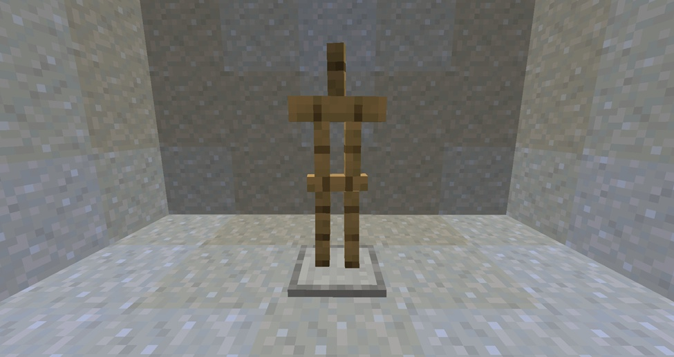
Более подробный гайдКрафты на нашем сервере
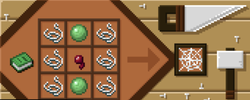
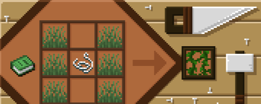
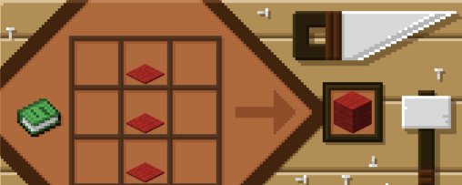
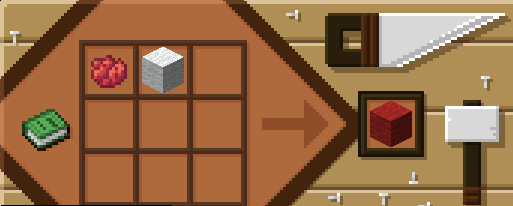
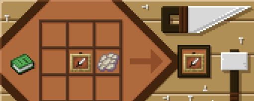
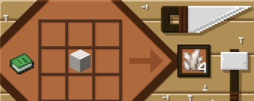
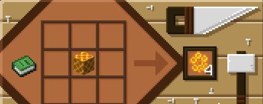
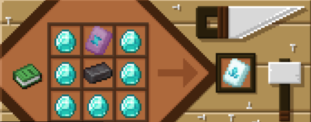
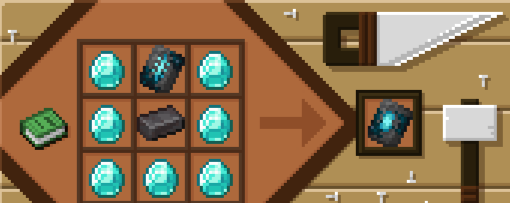
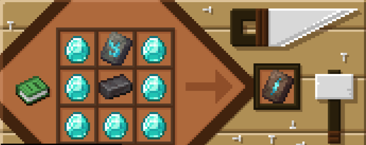
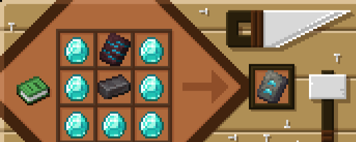
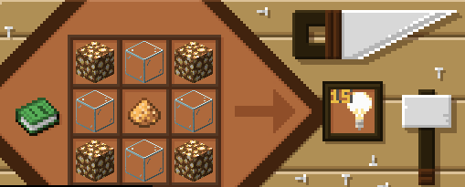
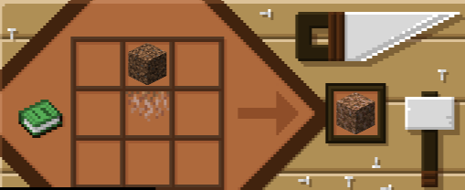
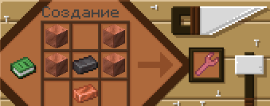
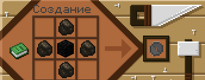
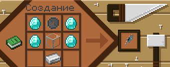
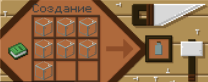
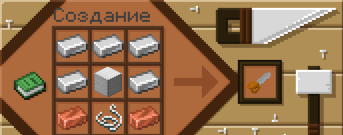
Документация обновлена: 15.01.26
Гайд по воллейбольному мячику
Плагин позврояющий создать мячик на сервере.
Чтобы создать мячик нужен иглобрюх и 8 кусков кожи.
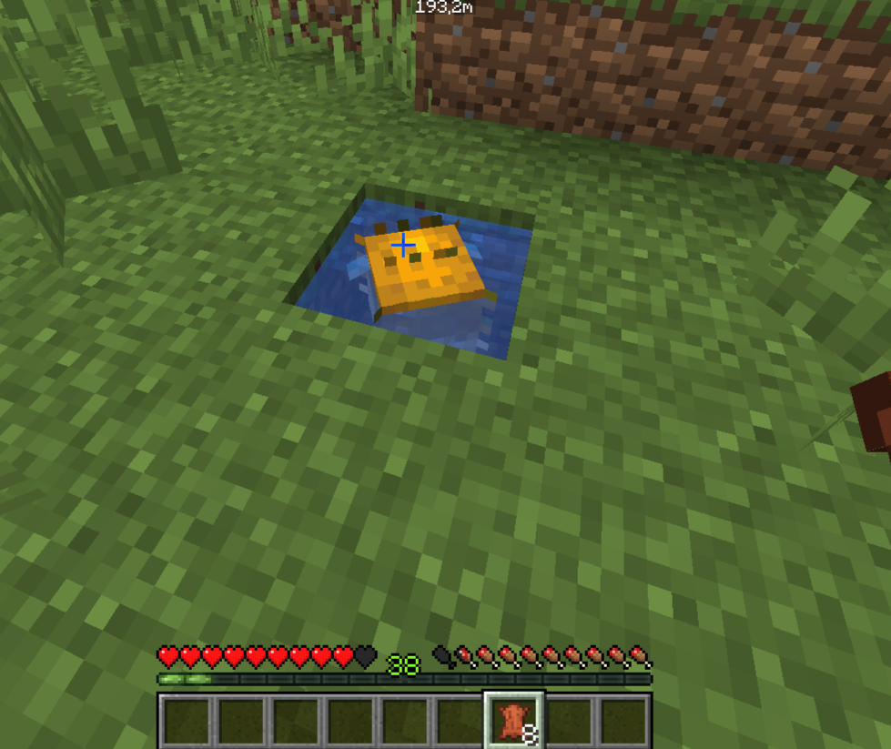
Кликни по нему и возьми появившийся мячик.
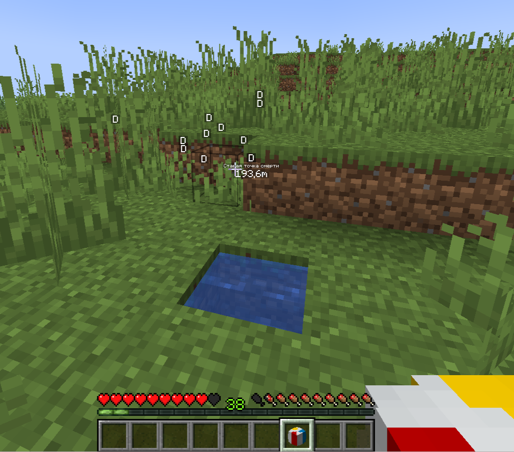
Документация обновлена: 15.01.26
Удобные шалкера
Плагин позврояющий открывать шалкера:
Чтобы Открыть шалкер, нужно тыкнуть ПКМ по воздуху.
Чтобы Открыть шалкер в инвентаре, кликните ПКМ по нему.
Чтобы поставить шалкер, SHIFT + ПКМ.
Документация обновлена: 15.01.26
Починка наковален
Плагин позврояющий чинить наковальни на сревере.
Чтобы починить поврежденную наковальню, киньте на наковальню 1 блок железа.
Чтобы починить разбитую наковальню, киньте на наковальню 2 блок железа.
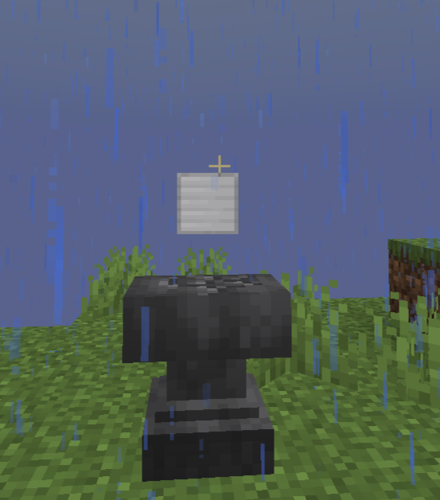
Наковальная после становится полностью починенной.
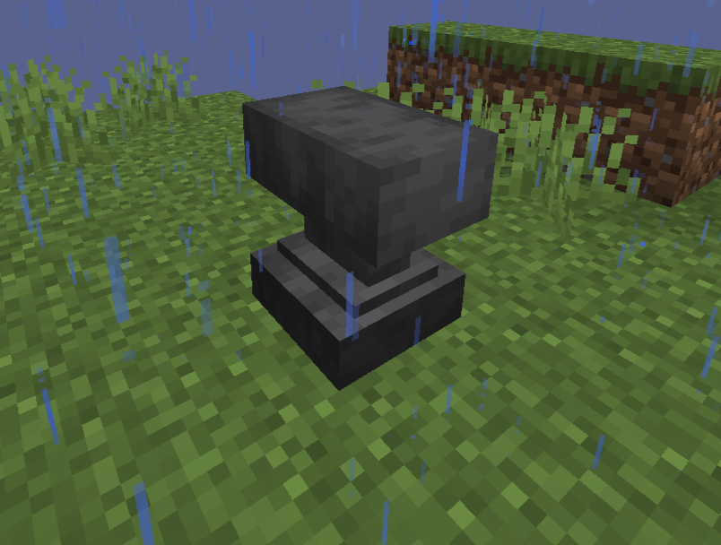
Документация обновлена: 15.01.26
Универсальная камнерезка
Плагин позврояющий перрабатывать дополнительно, разные ресурсы. Также если кинуть 1 булыжник на камнерезку, то получится 1 песок.
Пример использования. Переработка дерева
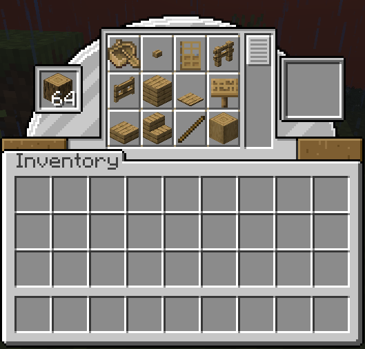
Документация обновлена: 15.01.26
Система границ
На сервере МВ(Мир выживани) - расширение ведет администрацией(Императором).
Несите алмазы в банк и расширяй.
На сервере МФ(Мир ферм) - вы должны нести алмазы в МВ в банк.
Расширение границ производится также администрацией.
Документация обновлена: 15.01.26
Система жителей
На сервере МВ(Мир выживани) - торговля вообще запрещена.
На сервере МФ(Мир ферм) - торговля разрешена, но все торги будут за Thunder coin. Их можно обменять в банке или при торговле с жителями.
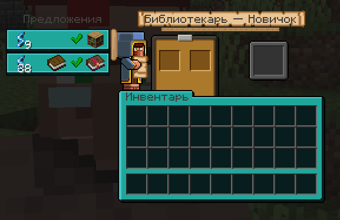
Документация обновлена: 15.01.26
Полезные команды
Для игроков
/farm - переместится в Мир Ферм.
/surv - переместится в Мир Выживания.
/hub - переместится в Лобби.
/m [игрок] [сообщение] - отправить сообщение игроку
(можно отправить игроку, который даже находится на другом сервере).
/r [сообщение] - написать последнему игроку, с кем общались.
/mylimit - посмотреть свой лимит, сколько врменеи оставлось.
/useprom [промокд] - использовать промокод на сервере.
/xp get [all|числоL] - заточить свой опыт в бутылку (можно переносить между серверами).
/sit /lay /crawl- сесть, лечь, ползти.
команды PlasmoVoice
/disc search [видео] - найти видео/стрим с ютуба,твич.
/disc burn [ссылка] - прожечь диск видеом/стримом с ютуба/твича.
Интерактивный чат
@ник - упомянуть игрока или себя.
[item] - напишите в чате, чтобы поделиться предметом в руке.
[inv] - напишите в чате, чтобы поделиться инвентарем.
[ender] - напишите в чате, чтобы поделиться эндерсундуком.
[xyz] - напишите в чате, чтобы поделиться своими координатами
Нажав на ник игрока в чате, вам заполнится автоматически фомра - /m ник
Наведя на ник, вы можете посмотреть баллы иерархии и разную информацию.
(Все заполнители и функции распространяются на все чаты, в том числе ЛС)
команды для спонсоров
/mylimit autospent on|off - автоматически и рационально использует ваши талоны из инвентаря.
(on - включить | off - выключитть)
/disc cancel - выключить музыку.
/sethome [название] - поставить точку дома.
/home [название] - переместиться на точку дома.
/homes - посмотреть точки дома.
/ender - открыть эндерсундук.
/hat - одеть предмет на голову.
/dback - переместиться на точку смерти.
/selectcolor none|HEX - выбрать цвет в глобальном чате.
Ссылка на HEX цветаДокументация обновлена: 15.01.26
Лимиты в МФ
Общая информация
Перемещаясь в мир ферм, у вас начинается отсчет времени, потому что каждый игрок имееет ограничение по нахождении в МФ. Посмотреть свой лимит вы можете в любом мире МВ или МФ, командой /mylimit .
Но благодаря системе рангов на сервере и существовании спонсоров, можно увеличить себе базовое нахождение в мире ферм.
Нахождение в МФ, считается таким обрзоам.
1. Ваш ранг, от него зависит ваше базовое нахождение на сервере(в минутах).
2. Дополнительный процент к нахождению от базового, его может выдать вам администрация, за активную игру или как награду.
3. Дополнительный процент к нахождению от базового и надбавки, дает спонсорка, обычная 25%, спонсор+ 50%.
В итоге на нахождение в МФ влияет: Ранг, Активность, Наличае спонсорки.
Распределение времени нахождения, для каждого ранга
Новичок - 60 минут
Послушник - 90 минут
Служитель - 120 минут
Знаток - 150 минут
Элитный - 180 минут
Документация обновлена: 15.01.26